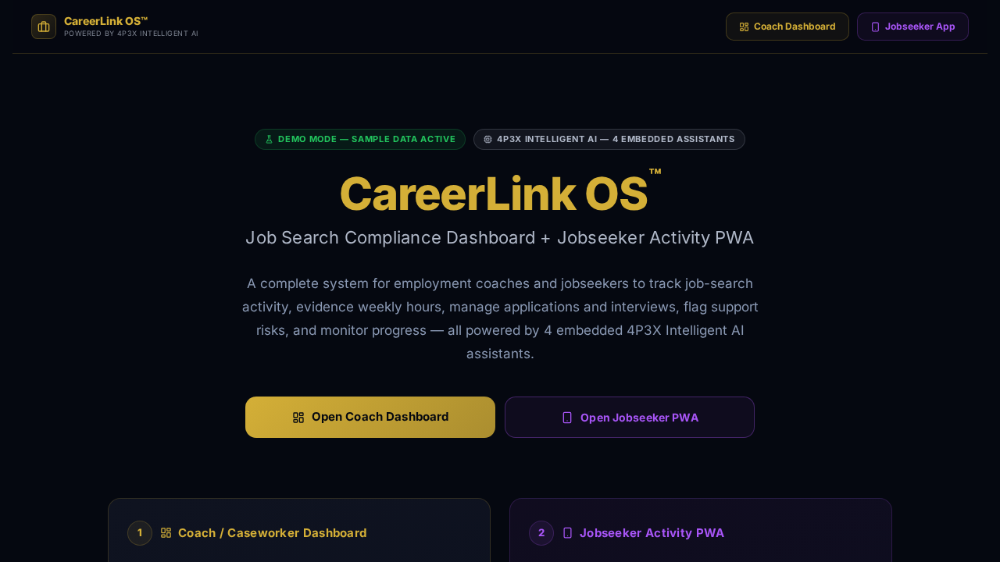

Demo Mode shows the product. Live Mode runs the product — once connected to a real backend, authentication, persistent records, and real-time sync.
What it is
CareerLink OS™ demonstrates how the 4P3X architecture can power an employment support and career development platform — combining a coach/caseworker dashboard with a jobseeker activity PWA, AI-assisted guidance, and compliance tracking.
Where it can be used
Employment support programmes, government-funded employability schemes, private career coaching practices, education providers, and job centres.
Why it was built
Employment support organisations often lack structured digital tools to track jobseeker progress, evidence weekly hours, flag support risks, and report outcomes to funders. CareerLink OS™ demonstrates a structured solution.
When it is useful
When employment coaches need to track client job-search activity, manage caseloads, evidence compliance, flag at-risk clients, and generate outcome reports for funders.
Who it helps
Employment coaches, caseworkers, careers advisers, HR support teams, DWP-adjacent programme providers, and job-readiness support organisations.
How it works
Features a Coach Dashboard for caseload management, progress tracking, and outcome reporting — plus a Jobseeker Activity PWA for logging applications, evidencing hours, completing tasks, and receiving AI-assisted career guidance.
Key features
Architecture behind it
Refactored from the 4P3X base with employability-sector data model, coach/jobseeker split, compliance tracking logic, and AI guidance configuration.
Demo Mode to Live Mode pathway
Demo Mode runs with sample jobseekers and caseload data. Live Mode connects real user accounts, persistent case records, funder reporting exports, and compliance evidence systems.
What it can become next
Could expand to include Universal Credit compliance modules, DWP reporting integrations, CV builder tools, employer connection pathways, and outcome payment tracking.
Investor and employer relevance
Shows commercial awareness of the publicly funded employment support sector — a multi-billion pound market with clear digital transformation needs and measurable ROI for funders.